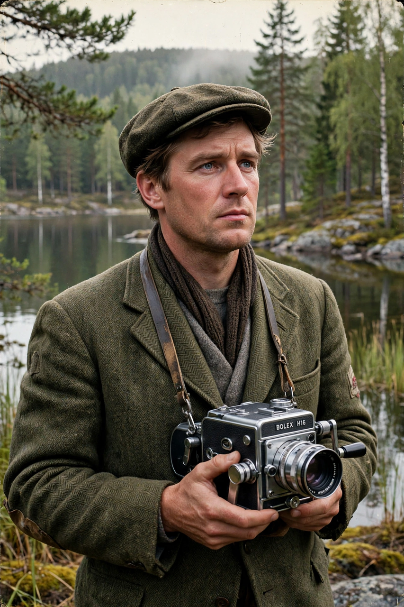

Arne Sucksdorff
| Arne Sucksdorff | |
|---|---|
 | |
| Born | 3 February 1917 Stockholm, Sweden |
| Died | 4 May 2001 (aged 84) Stockholm, Sweden |
| Occupation | Film director, cinematographer, screenwriter |
| Years active | 1940–1971 |
| Known for | Nature documentaries; The Great Adventure (1953) |
Arne Edvard Sucksdorff (3 February 1917 – 4 May 2001) was a Swedish film director, cinematographer and screenwriter, widely regarded as one of the greatest documentary filmmakers of the post-war era. He was especially celebrated for his lyrical nature films, in which patient observation of Scandinavian wildlife was combined with poetic narration and a strong sense of rhythm in the editing.
Early life and career
Sucksdorff was born in Stockholm and studied painting and biology before turning to photography and film. His first short films, made in the early 1940s, already displayed the style that would define his work: long, contemplative takes of animals and landscapes, photographed by Sucksdorff himself. His short Symphony of a City (1947), a portrait of Stockholm, won international attention, including an Academy Award for Best Short Subject.
The Great Adventure
His best-known film is The Great Adventure (Det stora äventyret, 1953), a semi-documentary feature following a year in the life of wild animals in the Swedish countryside, including a fox, an otter named Uttern, and two young farm boys. The film won the International Prize at the 1954 Cannes Film Festival and helped establish Sucksdorff's reputation worldwide.
Later work
Sucksdorff later made films in India, including The Flute and the Arrow (En djungelsaga, 1957), about the Muria people, and worked for a period in Brazil, where he helped train documentary filmmakers and made the feature My Home Is Copacabana (Mitt hem är Copacabana, 1965), shot with street children in Rio de Janeiro. He is grouped among the pioneers who, along with contemporaries such as Alf Sjöberg in fiction film, brought Swedish cinema to international prominence in the 1950s. See also cinema of other nations for the broader documentary tradition he influenced.
Filmography (selected)
- Symphony of a City (1947)
- The Great Adventure (1953)
- The Flute and the Arrow (1957)
- The Boy in the Tree (1961)
- My Home Is Copacabana (1965)
Sucksdorff died in Stockholm in 2001, aged 84.